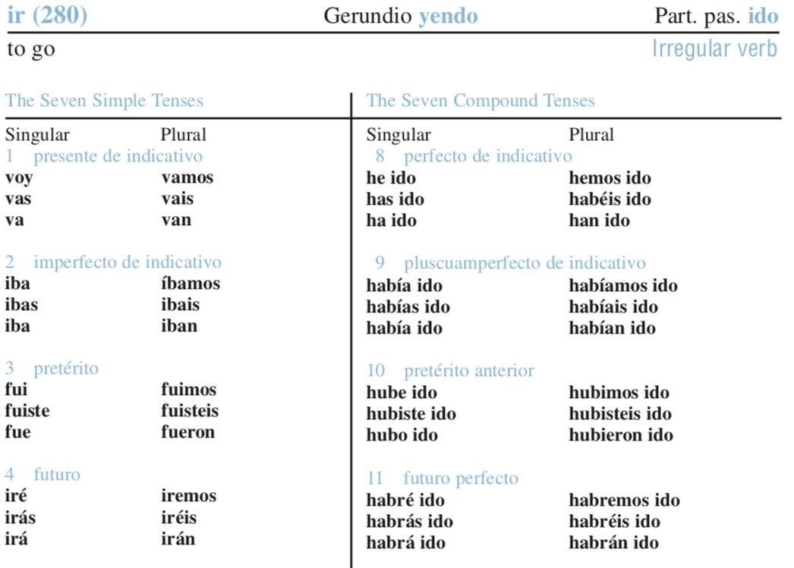

--- # Inflection and Derivation ### Dr. Will Styler - LIGN 120 --- ### Today's Plan - Inflection, Derivation, and Split Morphology - Lexical Families - Inflectional Paradigms --- # How are words constructed when making language? --- ### We've been thinking mostly about the surface result - "What's present at the end of the process" - ... but there's a process involved! - **What is the nature of word formation in actual linguistic practice?** --- ## The Split-Morphology Hypothesis --- <img class="wide" src="diagrams/split_morphology.jpg"> --- ### Why might we want Morphology to be split? - Many argue there are two stages of word construction! --- ### Two 'types' of word formation - Deriving or creating 'new words' - By Derivation (e.g. read -> readable, reader, unread) - Or by Compounding (e.g. readthrough, sight read, proofread) - These form *lexical families* of derivationally-related lexemes - Inflecting words to make the *gramatically necessary* forms *during language use* - Read -> reads, read, is read, has read - These form *paradigms* of inflectionally-related word forms --- ### Inflection vs. Derivation Intuitions - What 'belongs in the dictionary'? - Reader? Reading? Reads? Proofread? - Nerd? Nerdy? Nerds? Nerding? Nerd out? - What forms are missing? - Can you think of a noun which can't take a plural? - Can you think of an adjective which can't take un-? - What affixes change the lexical category of the base? - What affixes leave the word 'meaning the same thing'? --- ### So, how do we split morphology? --- <img class="wide" src="diagrams/split_morphology_labeled.jpg"> --- <img class="wide" src="diagrams/split_morphology_redirected.jpg"> --- ### These represent two very different worlds - Not just for morphology! - We're not going to take a strong stand on which one is correct - We'll focus on the consequences of either of these perspectives for Language - But we will treat the inflection vs. derivation distinction as useful and meaningful --- # Paradigms and Inflection --- ## Inflectional Morphology The addition of morphemes which change the meaning of a lexeme *in a given linguistic or grammatical context* --- ### Certain grammatical contexts demand certain forms - \*"I see three cat yesterday" - <clg>I saw three cats yesterday</clg> - \*"John walk to work and see Jane dog" - <clg>John walked to work and saw Jane's dog</clg> - \*"Walk in nature make me feel more alive" - <clg>Walking in nature makes me feel more alive</clg> --- ### These forms are *very* predictable - A given grammatical (e.g. 3sg) or situational (e.g. plural, past) context requires certain morphemes - We do not need to memorize (most of) them - These new word forms are generated 'on the fly' --- ### Inflectional Forms form Paradigms --- ## Paradigm A set of word-forms which belong to a single lexeme - Noun paradigms are often called *declension classes* - Verb paradigms are often called *verb conjugations* --- ### Russian Case Marking Paradigm <center> <style type="text/css"> .tg {border-collapse:collapse;border-spacing:0;} .tg td{font-family:Arial, sans-serif;padding:10px 5px;border-style:solid;border-width:1px;overflow:hidden;word-break:normal;border-color:black;} .tg th{font-family:Arial, sans-serif;font-weight:normal;padding:10px 5px;border-style:solid;border-width:1px;overflow:hidden;word-break:normal;border-color:black;} .tg .tg-s268{text-align:left} </style> <table class="tg"> <tr> <th class="tg-s268">ana<br></th> <th class="tg-s268">'Anna' (Nominative)<br></th> </tr> <tr> <td class="tg-s268">anu</td> <td class="tg-s268">'Anna' (Accusative)</td> </tr> <tr> <td class="tg-s268">anʲe<br></td> <td class="tg-s268">'to Anna' (Dative)</td> </tr> <tr> <td class="tg-s268">ani</td> <td class="tg-s268">'Anna's' (Genitive)</td> </tr> <tr> <td class="tg-s268">anoj</td> <td class="tg-s268">'with Anna' (Instrumental)</td> </tr> <tr> <td class="tg-s268">anʲe</td> <td class="tg-s268">'about Anna' (Prepositional)</td> </tr> </table> </center> --- ### Turkish Possessive Paradigm --- ### Spanish Verb Conjugations <img class="wide" src="morphology/501spanishverbs.jpg"> ---  --- <img class="wide" src="morphology/spanish_irparadigm_bottom.jpg"> --- # Word Families and Derivation --- ## How are words created? --- ## Lexeme A single unit of form and meaning, which may have many word-forms --- ### Sometimes, lexemes are just made up - 'yeet' - 'google' - 'uber'* - 'xerox' - These words are *roots*, and are not analyzable - **These words were not created from an existing word!** --- ### Often, new word-forms are created from existing lexemes - burn -> 'burner' - left -> 'lefty' - boy, soy -> 'soyboy' - pad, phone, OS -> iPad, iPhone, iOS - beauty -> 'beautiful' - tender -> 'tenderness' - **These words are analyzable, and multi-morphemic!** --- ## Derivational Morphology Adding affixes or other morphological units to a lexeme to create a new word forms --- ### This process creates 'families' of words - A list of word-forms which are all *derivationally related* to a single lexeme - Pretty, Prettily, Prettyish, Non-Pretty, Anti-Pretty, Prettify? - Tight, tighten, overtighten, tightener, tight-ish, anti-tighten? - Rock, rocklike, Rocky, De-rock, derocker, non-rock, Rockify/Rocken? --- ### What about these? - Hook, Unhook, Rehook, Hooky, Hookup, Right Hook, Fish-hook - Rock, rocker, rock out, anti-rock, rock-esque - These are not considered word families - *1) They introduce new concepts* - *2) The lexical category of the bases are different* - *3) The meanings are unpredictable (e.g. rocker, hooker)* - ... but this is still derivational morphology! --- ### Word families can be treated like paradigms <style type="text/css"> .tg {border-collapse:collapse;border-spacing:0;} .tg td{font-family:Arial, sans-serif;padding:10px 5px;border-style:solid;border-width:1px;overflow:hidden;word-break:normal;border-color:black;} .tg th{font-family:Arial, sans-serif;font-weight:normal;padding:10px 5px;border-style:solid;border-width:1px;overflow:hidden;word-break:normal;border-color:black;} .tg .tg-viqs{color:#fe0000;text-align:left;vertical-align:top} .tg .tg-s268{text-align:left} .tg .tg-0lax{text-align:left;vertical-align:top} </style> <table class="tg"> <tr> <th class="tg-s268"></th> <th class="tg-0lax">calm</th> <th class="tg-0lax">happy</th> <th class="tg-0lax">sweet<br></th> <th class="tg-0lax">quiet</th> <th class="tg-0lax">evil</th> <th class="tg-0lax">linguistic<br></th> </tr> <tr> <td class="tg-0lax">_ly<br></td> <td class="tg-0lax">calmly</td> <td class="tg-0lax">happily</td> <td class="tg-0lax">sweetly</td> <td class="tg-0lax">quietly</td> <td class="tg-0lax">evilly</td> <td class="tg-0lax">linguistically</td> </tr> <tr> <td class="tg-0lax">un_<br></td> <td class="tg-viqs">uncalm</td> <td class="tg-0lax">unhappy</td> <td class="tg-viqs">unsweet</td> <td class="tg-viqs">unquiet</td> <td class="tg-viqs">unevil</td> <td class="tg-0lax">unlinguistic</td> </tr> <tr> <td class="tg-0lax">_ish<br></td> <td class="tg-0lax">calmish</td> <td class="tg-0lax">happyish</td> <td class="tg-0lax">sweetish</td> <td class="tg-0lax">quietish</td> <td class="tg-0lax">evilish<br></td> <td class="tg-0lax">linguisticish</td> </tr> <tr> <td class="tg-0lax">to _<br></td> <td class="tg-0lax">to calm</td> <td class="tg-viqs">to happy</td> <td class="tg-viqs">to sweet</td> <td class="tg-0lax">to quiet</td> <td class="tg-viqs">to evil</td> <td class="tg-viqs">to linguistic</td> </tr> <tr> <td class="tg-0lax">_ify</td> <td class="tg-viqs">calmify</td> <td class="tg-viqs">happify</td> <td class="tg-viqs">sweetify</td> <td class="tg-viqs">quietify<br></td> <td class="tg-0lax">evilify</td> <td class="tg-viqs">linguisticify</td> </tr> </table> --- ### ... but they're often incomplete - Not all derivational affixes can apply to all lexemes - There's less contrast in 'sweeten' vs 'sweetify', 'unhappy' vs. 'non-happy' - Compare 'cat' vs. 'cats', 'walk' vs. 'walked' - The process is less predictable - You don't know whether an affix 'works' without language knowledge - The meanings aren't clear, necessarily --- ### So, we have derivation and inflection - One builds paradigms, and changes words 'online' according to situational or grammatical context - One builds lexical families, and seems to produce new words which belong in the dictionary - **What's the problem?** --- # Distinguishing Derivation and Inflection --- ### How can you tell these apart? - "Am I looking at two members of a lexical family, or two forms in the same paradigm?" - "Where, in a split-morphology point of view, was this word formed?" --- <section data-background-color=#708cef></section> The '-ful' in 'bountiful' is an example of... A) Inflectional Morphology B) Derivational Morphology --- <section data-background-color=#708cef></section> The '-en' in 'darken' is an example of... A) Inflectional Morphology B) Derivational Morphology --- <section data-background-color=#708cef></section> The '-er' in 'computer' is an example of... A) Inflectional Morphology B) Derivational Morphology --- <section data-background-color=#708cef></section> The '-less' in 'tactless' is an example of... A) Inflectional Morphology B) Derivational Morphology --- <section data-background-color=#708cef></section> The 'un' in 'unimpressed' is an example of... A) Inflectional Morphology B) Derivational Morphology --- <section data-background-color=#708cef></section> The 're' in 're-adjust' is an example of... A) Inflectional Morphology B) Derivational Morphology --- ### This can be trickier than it seems! --- ### Sometimes, it's tricky - In Spanish, the diminutive is '-it@' - Gato -> Gatito - Señora -> Señorita - Libro -> Librito - Ardilla -> Ardillita - ... but both 'gatos' and 'gatitos' can be pluralized - Is the Spanish diminutive inflection or derivation? --- <img class="wide" src="diagrams/split_morphology_labeled.jpg"> --- ### Many linguists consider this a *continuum* - --- ### Your textbook gives you a list of properties --- ### ... but even those point to gradience! --- ### What does this mean for split morphology? <img class="wide" src="diagrams/split_morphology_labeled.jpg"> --- ### It's complicated! - Luckily, we don't need to make hard-and-fast decisions - We can think about the theoretical issues - ... and talk about the things that are *classically considered* inflectional or derivational --- ### Wrapping Up - There's theoretical debate about the nature of morphology in the mind - Some morphology feels inflectional, some feels derivational - Inflectional seems like it builds new word forms *on-line* in paradigms - Derivational morphology seems to create new word form families in the lexicon - The line is blurry, but that's OK! --- ## For Next Time - We'll dive into inflection a bit more! --- <huge>Thank you!</huge>